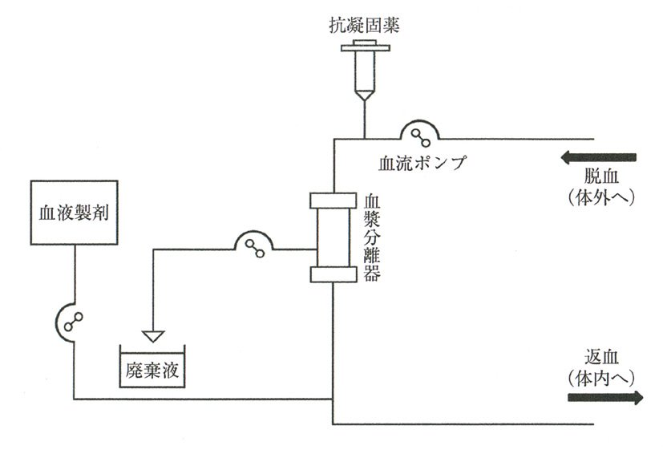
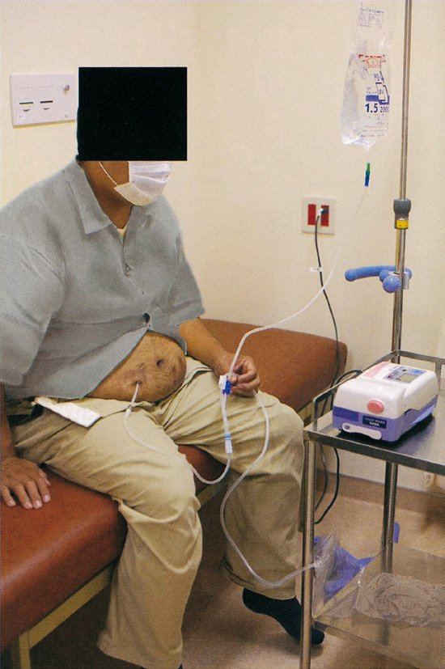
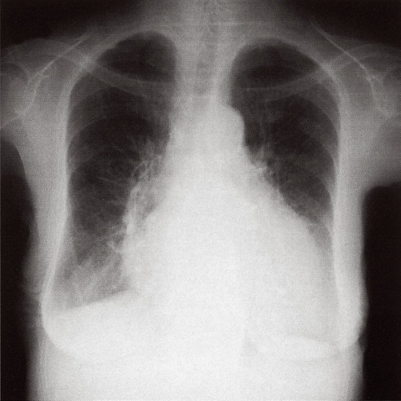

| 原因 | 機序 | ポイント |
| 糖尿病（高血糖） | 血糖 > 腎閾値（180mg/dL） | 最も一般的 |
| 薬剤（SGLT2阻害薬） | SGLT2阻害→再吸収障害 | 血糖正常でも陽性 |
| Fanconi症候群 | 近位尿細管全般の再吸収障害 | アミノ酸尿・リン尿も合併 |
| 妊娠（腎閾値低下） | 腎閾値↓→正常血糖でも尿糖 | |
| 偽陽性 | アスコルビン酸・一部薬剤 | 試験紙法の問題 |
| 項目 | 血液透析（HD） | 腹膜透析（PD） |
| 実施場所 | 透析施設 | 自宅 |
| 頻度 | 週3回 | 毎日（CAPD：1日4回等） |
| 血管アクセス | シャント（動静脈）必要 | 腹膜カテーテル |
| 食事制限 | 厳しい（K・P・水分） | 緩やか（K制限が少ない） |
| 腹膜機能 | 無関係 | 使用→腹膜機能は経年低下 |
| 就労・旅行 | 困難（週3回通院） | 可能 |
| 選択肢 | 正誤 | 根拠 |
| ａ 腹膜透析は可能 | ○ | 腎癌治療後（再発なし）→PD適応あり |
| ｂ 夫婦間腎移植は可能 | × | 84歳（高齢）・悪性腫瘍歴→移植禁忌 |
| ｃ 療法開始後の就業不可 | × | PD・HDどちらも就業継続可能 |
| ｄ 療法開始後の旅行不可 | × | PD（特に）は旅行可能 |
| ｅ 療法選択前に認知機能評価が必要 | × | 現在就業中→認知機能に問題なし |
| 選択肢 | 透析適応 | 理由 |
| ａ 高リン血症 | ×（緊急性なし） | リンバインダーで対応 |
| ｂ 高カリウム血症 | ◎（緊急適応） | 致死的不整脈（心室細動）リスク |
| ｃ 低カルシウム血症 | × | Ca製剤で対応 |
| ｄ 代謝性アシドーシス | ◎（緊急適応） | pH<7.2→心機能・意識障害 |
| ｅ 代謝性アルカローシス | × | 透析では改善しない |
| 分類 | 発症時期 | 機序 | 主な所見 |
| 超急性拒絶 | 移植直後（分〜時間） | レシピエントの既存抗体（HLA・ABO） | 移植腎壊死→腎摘出 |
| 急性拒絶 | 数日〜6か月 | T細胞性（細胞性）+ 抗体関与 | 移植腎腫大・Cr↑・発熱・疼痛 |
| 慢性拒絶 | 6か月以降 | 抗体依存性・免疫非依存性 | 緩徐なCr上昇・蛋白尿 |
| 選択肢 | 正誤 | 根拠 |
| ａ 血小板が減少する | × | 血栓性微小血管症（TMA）では減少するが急性拒絶の典型ではない |
| ｂ 移植腎が腫大する | ○ | 急性拒絶→浮腫・炎症細胞浸潤→腫大 |
| ｃ 移植腎血流が上昇する | × | 血流は低下（抵抗増大） |
| ｄ 移植後6時間以内 | × | 6時間以内→超急性拒絶 |
| ｅ ClassⅠ抗原への既存抗体 | × | 超急性拒絶の説明（急性はT細胞主体） |

| 治療法 | 原理 | 除去対象 | 主な適応 |
| 血液透析（HD） | 拡散（濃度勾配） | 小分子（Cr・BUN・K） | 慢性腎不全・急性腎障害 |
| 血液濾過（HF） | 対流（膜圧） | 中分子物質 | 重症敗血症等 |
| 血液透析濾過（HDF） | 拡散+対流 | 小〜中分子 | HD+HFの組合せ |
| 血漿交換（PE） | 血漿分離・置換 | 大分子（抗体・免疫複合体） | 重症筋無力症・TTP・SLE等 |
| 血液吸着（HP） | 吸着剤 | 特定物質 | 薬物中毒・一部自己免疫疾患 |
| 腹膜透析（PD） | 腹膜透過 | 小〜中分子 | 慢性腎不全（在宅） |

| 選択肢 | 正誤 | 根拠 |
| ａ 塩分制限不要 | × | PD でも塩分制限が必要 |
| ｂ 週3回の通院必要 | × | PD は毎日自宅で実施（週3回通院 = HD） |
| ｃ 合併症として腸閉塞 | ○ | 被囊性腹膜硬化症→腸管癒着→腸閉塞 |
| ｄ 導入患者数が著しく増加 | × | 日本のPD患者数はHDより少なく横ばい |
| ｅ 透析液K濃度 5.0mEq/L | × | PD透析液のK濃度は0mEq/L（K除去のため） |
| 診断 | 発症時期 | 特徴 |
| 超急性拒絶 | 術中〜数時間 | 既存抗体による・移植腎即座に壊死 |
| 急性拒絶 | 術後数日〜6か月 | 発熱・移植腎腫大・疼痛・Cr↑←本症例 |
| 慢性拒絶 | 6か月以降〜年単位 | 緩徐なCr上昇・蛋白尿 |
| 糸球体腎炎 | 年単位後 | 原疾患再発または新規発症 |
| GVHD | 造血幹細胞移植後 | 腎移植では通常起きない |
| 項目 | 腹膜透析（PD） | 血液透析（HD） |
| 患者数 | 少ない（約3%） | 多い（約97%） |
| 食事制限 | 緩やか（K制限が少ない） | 厳しい（K・P・水分・塩分） |
| 施行場所 | 自宅（在宅） | 透析施設（週3回通院） |
| 血管アクセス | 不要 | シャント造設が必要 |
| 不均衡症候群 | 起きにくい | 起きうる（特に初回） |
| 腹膜透析カテーテル | 必要 | 不要 |
| 選択肢 | 正誤 | 根拠 |
| ａ 糖尿病があるので移植不可 | × | 糖尿病は腎移植禁忌でない（血糖管理が必要） |
| ｂ 血液型が違うので妻からの移植不可 | × | ABO不適合腎移植は可能 |
| ｃ 退職する必要がある | × | 移植後も就労継続可能 |
| ｄ 透析開始後でなければ移植不可 | × | 「先行的腎移植（preemptive）」は可能・推奨 |
| ｅ 癌が見つかれば移植不可 | ○ | 活動性悪性腫瘍 = 腎移植禁忌 |
| 検査値 | 透析適応 | 根拠 |
| 血清尿酸 10 mg/dL | × | 高値だが緊急透析の基準外 |
| BUN 38 mg/dL | × | BUN >100 mg/dL で検討（38は軽度） |
| 血清K 7.0 mEq/L | ◎ 緊急適応 | 致死的不整脈リスク（基準：K > 6.5） |
| 動脈血HCO₃⁻（選択肢ｄ） | 内容不明（pH<7.2が基準） | |
| 血清Cr 1.8 mg/dL | × | 軽度上昇（急性透析の絶対的基準外） |

| 選択肢 | A | B | 正誤 |
| ａ | 腎硬化症 | ? | ×（Aは糖尿病腎症が最多） |
| ｂ | 腎硬化症 | ? | × |
| ｃ | 糖尿病腎症 | ? | ×（Bが腎硬化症でない） |
| ｄ | 糖尿病腎症 | 腎硬化症 | ◎ |
| ｅ | 慢性糸球体腎炎 | ? | ×（Aは糖尿病腎症） |
| ｆ | 慢性糸球体腎炎 | ? | × |